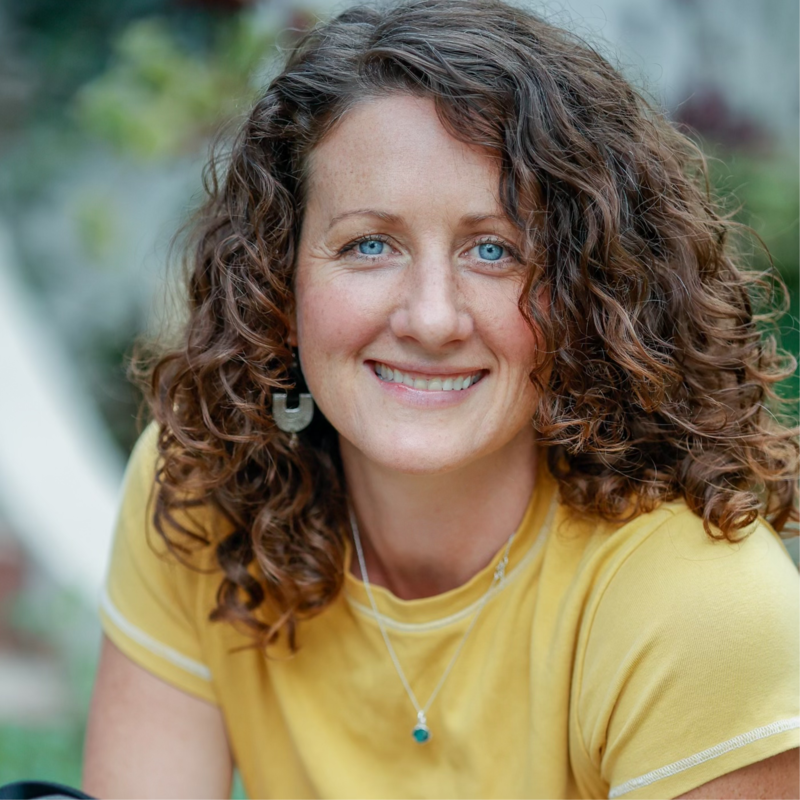

Byron Bay · Northern NSW · Gold Coast
Photography that captures the real you, in natural light
Indie Lane is the work of Donna Nugent, a branding, commercial and lifestyle photographer now based in the Byron Bay region. Relaxed sessions, vibrant colour and storytelling images your business and your family will love.
Who's behind the lens
I'm Donna. Photography found me on the way to somewhere else.
I grew up in country Victoria with a camera I did not yet know what to do with. Photography was not the plan, not at first. I left home to travel the world, and it was somewhere on the road, watching how light changes the way a person holds themselves, that the plan changed.
I moved to Melbourne to learn the craft properly, then spent my first chapter photographing weddings, over 200 of them. Two hundred first looks, first dances and in-laws meeting for the first time. That is where I learned how to get a total stranger to relax in front of my camera, usually inside five minutes.
A decade ago I put down roots on the Victorian Surf Coast and turned that same eye toward brands, businesses and everyday people, shooting headshots, food, product and documentary work for companies like Ocean Rd Consulting, Conexus Financial and QCE. These days I split my time between the Surf Coast and the Byron Bay region, so wherever you are between Torquay and the Gold Coast, there is a good chance I already know the light.
A photographer's style is simply how they see the world. Mine is warm light, honest colour and people who are actually enjoying themselves.

The journey so far
A decade-plus story, told in chapters
Credentials on paper are one thing. This is the actual path that got Donna here, chapter by chapter.
A camera before a plan
Growing up in country Victoria, Donna nearly always had a camera nearby, though photography as a career was not the plan yet. That came later.
Chasing better light
Before settling into any career, Donna left to travel the world. Watching how natural light changed a stranger's face, and how quickly someone relaxed once they felt seen, planted the idea that would not let go.
Learning the craft properly
Donna moved to Melbourne to study photography and start building a body of work worth showing.
200+ weddings, one skill that stuck
Donna's career began in the wedding industry, where she had the honour of photographing over 200 couples on their wedding day. That is where she learned to read a room and get a total stranger to relax in front of her camera, usually within minutes. It is still the foundation of every session she shoots today.
From weddings to brand storytelling
A decade ago Donna put down roots on the Victorian Surf Coast and pointed that same warmth at branding portraits, food, product and documentary photography, working with businesses including Ocean Rd Consulting, Conexus Financial and QCE.
Byron Bay and beyond
Today Donna splits her time between Torquay, Victoria and the Byron Bay region, NSW, bringing the same relaxed, natural light approach to clients across both coastlines.
What I photograph
Sessions made for your brand and your people
Every shoot is relaxed, unhurried and built around what you actually need the images for. Here is where I can help.

Branding Portraits
Headshots and personal brand images that look like you, not a stiff corporate suit. Perfect for your website, LinkedIn and socials.
Enquire ›
Commercial
Documentary style photography for businesses, schools and councils. People, products and spaces, captured with an artistic eye.
Enquire ›
Editorial & Lifestyle
Storytelling image sets and relaxed lifestyle sessions full of happy faces and real moments, shot outdoors in beautiful natural light.
Enquire ›
Food & Product
Fresh, vibrant images that make your menu and products irresistible, online and in print.
Enquire ›
Weddings
Relaxed, candid wedding day coverage from someone who has shot over 200 weddings, real moments over stiff posing, in beautiful natural light.
Enquire ›
Events
Natural, candid coverage that captures the feeling of the day, from launches to celebrations.
Enquire ›
Storytelling, happy faces, vibrant colours and natural light.
— Donna Nugent, Indie Lane Photography
Brands & businesses Donna has photographed for
Portfolio
A look at recent work
Client stories
What clients actually walk away with
Not just pretty pictures. Here is the kind of transformation a session with Donna typically delivers.

From dreading the shoot to using the photos everywhere
A business owner who had avoided being on camera for years needed headshots for a new website and LinkedIn.
Donna spent the first twenty minutes just talking, no camera in sight, then shot handheld while they worked, never posed stiffly against a plain wall.
A full image set now used across the website, LinkedIn and socials, with the client saying the photos finally look like them.

Real people, real workplace, no stock-photo feel
A business needed imagery of staff and spaces for reports and web use, wary of anything that looked staged.
Donna shot documentary style across a working day, staying in the background so people forgot the camera was there.
A library of authentic images the business still pulls from for reports, recruitment and its website years later.

Turning a menu into something people want to eat
A cafe needed food photography that felt vibrant and appetite driving, not flat or clinical.
Donna shot on location in natural light, styling each dish simply so the real colour and texture led the frame.
Images used across the menu, packaging and social feed that gave the brand a noticeably more premium feel.
Why clients trust Donna
A decade of experience, a personality you can actually work with
This is not a stranger with a camera. It is someone who has spent over ten years learning how to make people, including the ones who hate having their photo taken, look and feel like themselves.
200+ weddings taught her people, first
Before brand work, Donna spent years photographing weddings, the fastest way to learn how to put a nervous stranger at ease.
A relaxed, unhurried experience
No rigid posing lists. A calm, friendly approach so even camera shy clients feel comfortable within minutes.
Real businesses, real results
Trusted by companies like Ocean Rd Consulting, Conexus Financial and QCE for imagery that actually gets used.
Two coastlines, one eye for light
Based between the Byron Bay region and the Victorian Surf Coast, with the same natural light approach wherever she shoots.
Kind words
Loved by the people in front of the lens
Sample reviews shown for layout. Donna can swap these for real client quotes any time.
I have avoided cameras my whole life. Donna is the first photographer who made me forget one was even pointed at me. The photos do not look like a "photoshoot," they look like me on a good day.Long time branding client · Byron Bay region
Donna made me feel so at ease. I usually freeze in photos, but these actually look like me.Sarah M. · Branding client
Our team headshots have never looked this good. We are already booking again next year.James T. · Business owner
Beautiful, vibrant images that captured our brand and our food perfectly.Kel R. · Cafe owner
Before you book
Questions people ask before trusting someone with their photos
I genuinely hate having my photo taken. Is that a problem?+
How experienced are you, really?+
What happens to my photos after the shoot?+
Do you only shoot in Byron Bay?+
Will the photos actually look like a "photoshoot"?+
Existing clients
Your private gallery, ready when you are
Already had a shoot with Indie Lane? Log in to view, download and share your high resolution images any time, from any device.

Book a shoot
Let's create your visual story
Tell me a little about what you need and I will get back to you within one business day with availability and pricing.
Prefer to talk? Call Donna on 0400 815 182.